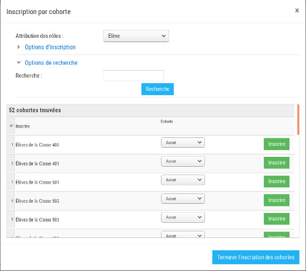

Inscription dans un espace de cours
Les enseignants peuvent très simplement inscrire des utilisateurs à leurs espaces de cours.
Il suffit pour cela de cliquer sur "Utilisateurs inscrits" dans le menu "Administration du cours > Utilisateurs"
du bloc "Administration" puis de cliquer sur le bouton "Inscrire". Moodle propose alors de choisir entre
"Inscrire un ou plusieurs utilisateurs" ou "Inscrire une ou plusieurs cohortes" :
Inscrire un ou plusieurs utilisateurs
L'inscription d'un ou plusieurs utilisateurs permet d'inscrire des personnes au cours nominativement.
L'enseignant peut rechercher les utilisateurs à inscrire :
- "Depuis mes classes/groupes", il pourra alors préciser sa recherche avec tout ou partie des compléments de recherche suivants :
- le "nom de l'établissement" parmi les établissements dans lesquels il exerce
- le "pofil" des utilisateurs recherchés
- la "classe", parmi la liste des classes dans lesquelles il intervient
- le "groupe pédagogique", parmi la liste des groupes pédagogiques dans lesquelles il intervient
- le "nom de l'utilisateur" recherché
- "Depuis l'annuaire ENT", il pourra alors inscrire tout utilisateur présent dans l'ENT quelque soit son établissement.
Comme ci-dessus, l'enseignant pourra préciser sa recherche avec tout ou partie des compléments de recherche demandés.
Il pourra choisir un "groupe ENT", en plus du profil, de la classe et du groupe pédagogique mentionnés ci-dessus.
- "Par nom", l'enseignant pourra rechercher un utilisateur par nom sur l'ensemble de l'annuaire de l'ENT.
Une fois le résultat de la recherche affiché, il ne restera plus qu'à cliquer sur le bouton
Inscrire correspondant à chaque utilisateur à inscrire.
Inscrire une ou plusieurs cohortes
Une cohorte correspond à un groupe d'utilisateurs partageant une caractéristique commune, comme par exemple les élèves d'une classe donnée de l'établissement.
Elles sont créées automatiquement dans Moodle.
L'avantage de l'inscription d'une cohorte par rapport à l'inscription d'individus est que
la cohorte est automatiquement mise à jour et donc les inscriptions au cours sont automatiquement mises à jour ; si un élève est ajouté à une cohorte inscrite au cours, alors cet élève sera inscrit au cours.
Les cohortes proposées pour l'inscription au cours sont celles de l'établissement dans lequel est créé le cours.

L'enseignant peut rechercher une cohorte en dépliant les "Options de recherche" et en entrant une chaîne de caractère permettant de mieux cibler la
cohorte recherchée.
Désinscriptions d'un cours
Pour désinscrire un ou plusieurs utilisateurs ou une ou plusieurs cohortes d'un cours, il suffit de cliquer sur le bouton "
Désinscrire"
de la page "
Utilisateurs inscrits" (menu "Administration du cours > Utilisateurs"), de préciser si l'on désire désinscrire des utilisateurs
ou des cohortes et enfin de cliquer sur les boutons "
Désinscrire" en face des désinscriptions à réaliser.